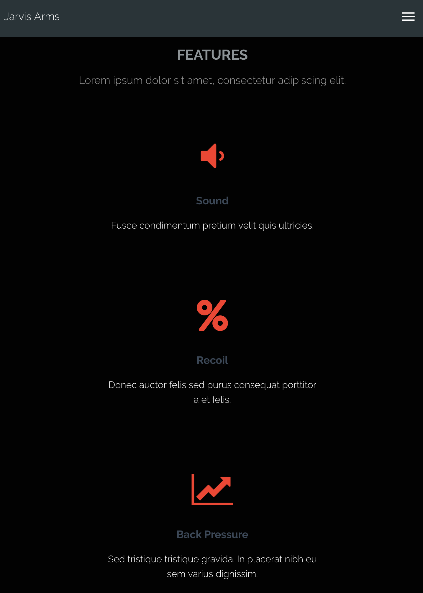
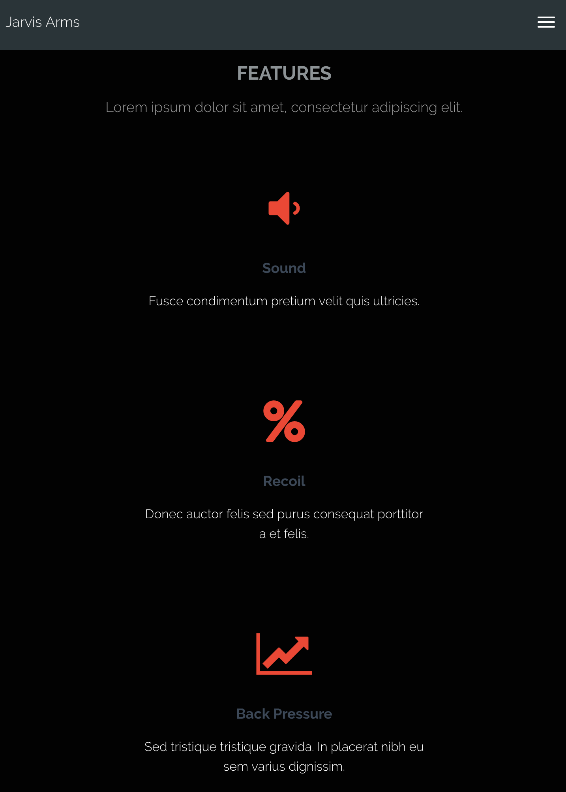

Trevor Albrethsen
I am a recent graduate out of Brigham Young University-Idaho with a Bachelor's degree in Web Design & Development. I enjoy Front-End Web Development because I love being able to see my thoughts and ideas come to life in web browsers. I have experience as a Front-End Web Developer through an internship and a senior project as a student at BYU-Idaho.
Experience
Front-End Developer Intern
I worked independently as the designer and the developer for Jarvis Arms using WordPress. The purpose of the website is to sell proprietary products created by Jarvis Arms, as it was an e-commerce website.
I worked closely with the owner of Jarvis Arms, communicating with him on a regular basis. I learned the value of communication and understanding throughout my internship. It's important that both parties are on the same page so progress and be made and flow smoothly.
 

{kind=link}
{kind=link}
{kind=link}
Web Developer
For my senior project, I worked on a 3-person team using Visual Studio Team Services (now Azure DevOps Services). We used VSTS to plan, organize, and push code to the team's Git repository.
Our project was completed in small sections using Agile. We would set two week sprints and divide the workload to make sure our project moved quickly and efficiently.
We were tasked in developing a coupon automation system for BYU-Idaho's Auxiliary Services. The programming languages and tools we used to develop this web application were C# with the .NET Framework, Material Design, and Angular.
My main role in the project was to design and develop the front-end using Angular with Material Design, as well as vanilla JavaScript. I worked on improving the user experience. For example, I included front-end validation and clear instructions.
Poster PDF: Senior Project Poster
Education
Brigham Young University-Idaho
GPA: 3.21
Skills
- Mobile-First, Responsive Design
- Organized and efficient
- Written and verbal communication
- Agile Development
Interests
My freetime generally consists spending time with my wife and our infant son. I love spending time with them and getting our son to smile is such a treat. Although we're a bit tied down to home (because there's only so much you can do with an infant), we do love going on walks and spending time with family and friends.
I also love watching sports. Football is my favorite sport and I'm an avid Oregon Ducks fan. I also happen to be a fan of the Miami Dolphins unfortunately.